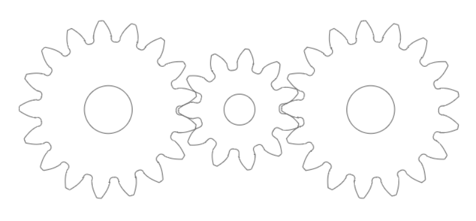

課程目標:
為了讓機械設計工程師了解, 該如何利用電腦與網路進行機械設計. 總共安排了四門課程:
計算機程式 - 內容分為 C, Python, Lua, Html5, CSS, Javascript 等, 利用可攜系統, Git, Fossil SCM, Windows 10 電腦, Ubuntu 電腦與網路的技術, 進行各種問題的解決.
最佳化設計問題: https://docs.scipy.org/doc/scipy/reference/tutorial/optimize.html
網際內容管理 - 在 Windows 10 與 Ubuntu 電腦, 建立 CMSimfly 與 Pygrouf 環境.
電腦輔助設計實習 - 加入電腦輔助機械設計零組件繪製與機器人模擬與製作技術研習.
協同產品設計實習 - 全面利用近端與雲端資源的整合, 進行機電資系統開發.
2018 Fall 計算機程式課程規劃心智圖 (under scrum1 At mde)
計算機程式課程:
課程採用可攜程式系統, 使用者可以下載一般版 p37.7z (240MB 解開後約 1GB) , 或較完整的進階版 Qt 可攜系統 .7z (8GB, 解開後約 21GB).
學習 Python 與 PyQt 用於視窗程式開發:
利用 Python 與 PyQt 可開發 Windows 10 環境執行的視窗程式, 利用 Python 與 Flask 結合 Brython 開發網際程式.
學習 C 用於 Tinkercad Arduino 控制卡模擬:
學習 Lua 用於 V-rep 機器人模擬:
學習 Javascript 與 Brython 與 Fengari-web 用於網頁動態模擬:
